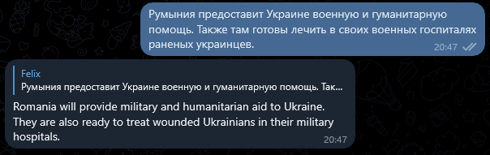

BabelBot
A Telegram bot for enabling self-hosted, low-bandwidth, asynchronous access to high quality translation APIs

Motivation
A friend of mine recently approached me and told me about demand from volunteers who are aiding the people currently fleeing the Russian invasion of Ukraine. They needed to be able to quickly translate messages from various languages, and the existing apps (Google Translate comes to mind) did not cut it due to spotty or slow mobile internet connections. He came up with the idea of using a Telegram bot, to allow reliable access, even with only minimal internet connectivity, as Telegram is already widely used both among those in need of aid and those helping and works well with low-bandwidth or unstable internet connections.
In response I whipped up BabelBot. While certainly still a bit buggy, and there's still some features I plan to add, interested folk and helpers anywhere can download and host it on their own hardware. It requires very little bandwidth, no network configuration, and runs on Windows, Linux, and any platform that runs .NET Core 6.0 (I've only personally tested Windows x64 and Linux x64 though, but it should run on macOS too). You can host it on your Raspberry Pi or on your home computer or laptop, either permanently or just whenever you know you'll need it. If you have access to a VPS, a dedicated server, or some sort of PaaS, as long as it can run .NET Core, it can run this.
Getting Started
To get BabelBot running, you will need the following:
- An account for the DeepL API
- A bot registered with Telegram's BotFather
- Your Telegram user ID and the IDs of any other user that will be able to trigger your bot
- BabelBot itself
BabelBot is not quite turnkey yet, as there's no configuration tool – and while the README file explains the technicalities, it's probably a bit too technical for many of the people who actually need it right now. So in the following, I will walk you through each these steps, followed by configuring and running the bot.
Registering for DeepL API access
DeepL is a fantastic translation service, supporting extremely high quality machine translations for a growing number of languages. You can try them for yourself right on the website. They also offer an API to automate translation tasks – up to 500,000 characters per month are included in their free tier. Beyond that, the prices are (in my opinion) fairly reasonable and you can set up hard limits.
Head over to the API homepage and scroll down until you reach the plans. There you can find the sign up link.
Finish the sign-up procedure, and log into your new account. Head over to the "Account" tab (or try this link), and scroll down. There you'll find your Authentication Key. You'll need this later.
Registering the bot
Use the following link to contact the official BotFather bot, which is used to register your bot with Telegram.
If the above link doesn't work for you, you can also search @botfather on Telegram, make sure it has the "verified" checkmark.
Start the conversation and in the command list, select (or type):
/newbot
BotFather will then ask you for a name for your bot. This can be anything you like. Afterwards, you'll be asked to choose a username. This one can't contain spaces and must have a name ending in "bot".
Once you're done choosing a name, BotFather will congratulate you on your new bot and give you your API Token. You'll also need this later on.
Downloading BabelBot
In this example, we'll be using Windows, but you should be able to follow along for the most part. You'll of course need to download the appropriate package for your architecture, but the rest of the steps should not be too different.
You can find the latest prebuilt release of BabelBot on GitHub. Open the "Assets" bar and download the file named BabelBot_[version]_win-x64.zip . At the time of writing this, this is still v0.0.1-alpha – if the rest of the steps change in future versions, I will update this page accordingly.
Extracting and configuring BabelBot
Extract the downloaded file to a location of your choosing. Navigate to the location where you extracted it, and open the file appsettings.json in any editor – Notepad should suffice.
Find the line with the AuthKey key under the DeepL section, and set the AuthKey to the DeepL API authentication key from earlier. It should look like this:
"AuthKey": "c123456e-acdc-1234-4711-b12355645af7a:fx"
Next, find the ApiKey under Telegram, and set it to the Token obtained earlier from BotFather. It should look like this:
"ApiKey": "1234567890:AABBjkaUdErWeLsCh5vAfOoBaRXPqux125aWA",
While the bot technically now has all it needs to run, you won't be able to do much with it, as no users are configured to be allowed to interact with it. This was a deliberate choice for the first release, as I believe it will be very difficult to keep some control of the DeepL API usage quotas, and it might lead to "spammy" behaviour if the bot is added to a group. So, we need to find out your user ID.
Finding out your User ID
The easiest way is probably to contact @userinfobot on Telegram. It will respond to your message with your public user information, including the ID we're looking for.
For any other users you wish to add, either ask them for their User ID or ask them for permission to forward one of their messages to @userinfobot.
Add the IDs of the users to the AllowedUsers line in the settings file, separated by comma. It should look like this:
"AllowedUsers": [47110815,123456789]
or, if you only have one user, like this:
"AllowedUsers": [123456789]
Now we're finally ready to go!
Running the bot
To launch the bot, run BabelBot.Worker.exe (or just BabelBot.Worker on Linux).
You should see output similar to this:
info: BabelBot.Worker.Worker[0]
Starting receiver TelegramReceiver
info: Microsoft.Hosting.Lifetime[0]
Application started. Press Ctrl+C to shut down.
info: Microsoft.Hosting.Lifetime[0]
Hosting environment: Production
info: Microsoft.Hosting.Lifetime[0]
Content root path: C:\Users\chump\Downloads\BabelBot-win-x64
If you don't see any errors, great! That means you can head into Telegram, search for your bot (by username works best) and start a conversation with it. It should reply to any message you send in any of DeepL's supported languages its best attempt at a translation.
Changing the target language
By default, BabelBot translates into UK English, but you can change this in the appsettings.json as well. Add the following line before the AuthKey line from earlier:
"DefaultTargetLanguageCode": "en-GB",
Replace en-GB with the language code of your choice. You can find the supported language codes in the DeepL API documentation found here. Look in the target_langsection. Note that the "unspecified variants" of English and Portuguese do not work - you'll need to pick either en-GB/en-US or pt-PT/pt-BR respectively.
Caveats
Currently, only pure text messages are supported. Messages with attachments do not yet work, but are high on the list.
Also, Ukrainian is not officially supported. However, I can personally attest pretty good results with feeding Ukrainian text into the API using source language auto detection. Hopefully, DeepL will add official support for the Ukrainian language soon.
Source Code and Call for Contributions
I've published the source code on GitHub under the permissive MIT License, allowing anyone to use and modify it for their use case.
If you also believe that this is a worthwhile project, code contributions are very welcome! Check the issue tracker for something that might interest you, but your own ideas are also more than welcome. Read CONTRIBUTING.md for more information.
Reporting Issues
This program was made very quickly and is my first "proper" C#/.NET project. Due to this, there likely are several bugs and definitely several missing features. If you happen to stumble upon any, or have a need for any additional features, please create an Issue on GitHub. If you think you have found something serious (read: security-relevant) and wish to wait with publicizing until the issue has been fixed, please contact me at babelbot@kaputty.de.
Closing thoughts
I made this program in a hurry, in the hopes that it might be of use to the people currently helping civilians fleeing from a terrible war which is bringing terror over the entire world and currently threatening the lives of countless people forced into a fight they never asked for.
Please, if you're not already helping, please consider what you can do to help those in need right now. You can donate to aid organizations like Doctors Without Borders, UNICEF, or to Ukrainian efforts like the Keep Ukraine's media going GoFundMe directly. Maybe there are aid efforts organized near you, collecting much-needed goods like clean blankets, first-aid materials, hygiene products, batteries, flashlights, and more.
We might not individually be able to stop the madness and these horrible crimes from happening, but we can do our best to stand in solidarity with and help those who are affected.